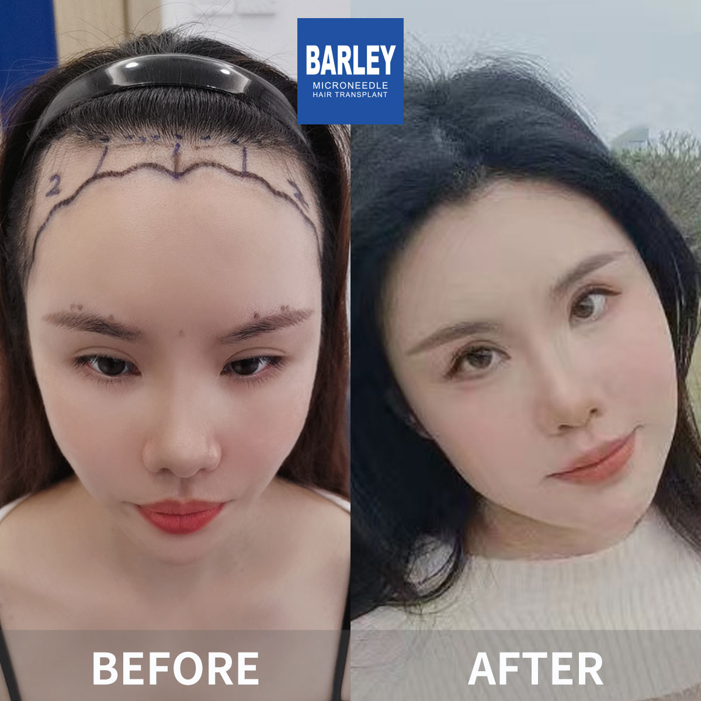

Female pattern hair loss, also known as female androgenetic alopecia, impacts roughly 40% of women before they reach age fifty and can start as early as the teenage years. Unlike men, who tend to see recession at the temples and along the hairline, women with FPHL typically experience diffuse thinning spread across the top of the scalp while the frontal hairline stays mostly intact. The process involves progressive miniaturization of hair follicles, leading to a wider part and a noticeable drop in overall volume. You might notice more scalp showing through your hair, a ponytail that feels thinner than before, or extra strands left behind on your brush or in the shower drain. The emotional toll of female hair loss can be significant, affecting confidence, social interactions, and overall quality of life. The good news is that early intervention yields the best outcomes, and this condition responds well to modern treatment approaches.
The Ludwig scale is the standard classification system used to evaluate female pattern hair loss. Unlike the Norwood scale designed for men, the Ludwig scale focuses on the extent of diffuse thinning across the crown and top of the scalp. It identifies three stages of progression:
While male hair loss is mainly driven by DHT sensitivity, female hair loss usually comes from a combination of overlapping factors that each need to be identified and addressed for treatment to succeed:
Hormonal Shifts: Changes in estrogen and progesterone during menopause, pregnancy, the postpartum period, or after stopping birth control pills can trigger either temporary or ongoing hair shedding. Polycystic ovary syndrome (PCOS) is another common hormonal condition that leads to hair thinning in women because of elevated androgen levels.
Stress and Telogen Effluvium: Physical or emotional stress — from illness, surgery, rapid weight loss, or psychological trauma — can force a large number of hair follicles into the resting (telogen) phase all at once, causing noticeable shedding two to four months after the triggering event. This type of hair loss is usually temporary and reversible once the underlying cause is resolved.
Traction Alopecia: This type of hair loss comes from hairstyles that constantly pull on the follicles, such as tight ponytails, braids, extensions, and weaves. Over time, this repeated tension damages the follicles and can lead to permanent hair loss along the hairline if not caught early. The fix is simple: stop wearing tight hairstyles and give your hair regular breaks from tension.
Nutritional Deficiencies: Low levels of iron (ferritin), vitamin D, zinc, biotin, and protein can weaken the body's ability to grow healthy hair. A full blood panel is an essential part of diagnosing female hair loss. Many women see a meaningful improvement in hair quality once identified deficiencies are corrected through diet changes and supplementation.
As the only FDA-approved medication for female pattern hair loss, Minoxidil 2% or 5% topical solution applied once or twice daily stimulates follicles and increases hair density. It is safe for long-term use in women and works independently of hormonal pathways, making it suitable regardless of the underlying cause. Most women see visible results after four to six months of consistent use, and continued application is needed to maintain the benefits.
Platelet-Rich Plasma injections use growth factors from your own blood to stimulate follicle activity and improve scalp health. PRP is especially popular with women because it is completely natural, has no hormonal side effects, and works well alongside other treatments. A typical course of three to four sessions spaced one month apart usually produces noticeable improvements in hair density and quality.
Women with stabilized hair loss and good donor density can be excellent candidates for FUE hair transplantation. Unlike men, women often benefit from placing grafts into areas of diffuse thinning rather than completely bald zones. This technique requires exceptional surgical skill to protect the surrounding native follicles. When performed by experienced surgeons, female hair transplants produce natural-looking, impressive results.
Understand your hair situation and find the right path forward

Approximately 40% of women experience hair loss by age 50, and up to 50% by age 70. Women's hair loss looks different from men's — it usually shows up as overall thinning rather than distinct bald patches. The encouraging truth is that with early detection and the right approach, women can effectively manage hair loss and maintain beautiful, healthy hair. This guide is designed to help you understand your specific situation and find solutions that actually work.
Figure out which type of hair loss you are dealing with
Determine how far your hair loss has progressed
Find out what is causing your hair to fall out
Practical steps matched to each stage of hair loss
Follow these steps to address your hair loss with confidence
Use the Ludwig scale to determine your hair loss stage
Check for nutritional deficiencies and hormone imbalances
Begin using 2% topical solution regularly
Correct any deficiencies found in your blood work
Explore surgical options if your situation calls for it
Track results and keep up with your hair health routine
What makes our women's hair loss program different when it comes to delivering real, beautiful results
Unlike many clinics, we understand that women's hair loss works differently. Our evaluation includes a thorough medical review, hormone testing, and a genuine focus on your personal goals and concerns.
Women's goals are often different — maintaining femininity, achieving a believable hairline, and adding subtle volume. Our doctors are skilled at creating soft, natural hairlines with artistic graft placement for beautiful, undetectable results.
We know that hair loss in women carries a heavy emotional burden. Our English-speaking female staff provides caring, empathetic support throughout your entire journey, from the first consultation to post-procedure follow-ups.
A trusted name with a proven history of success
Pioneer and leader in microneedle hair transplant technology since 2006
Located in major cities across China, each meeting the same high standards
Proprietary microneedle and implant pen innovations that deliver superior results
Trusted by patients around the world for outstanding transformations
Full English support for international patients at every stage of treatment
State-of-the-art facilities with strict safety protocols for your complete peace of mind
See the incredible transformations our patients have achieved



Smiling faces from patients who trusted us with their care

The guide made all the difference

Noticeably better now

Feeling like myself again

So glad I chose Barley

Real improvement in hair health

Thrilled with the outcome

My hair has never looked better
Back to feeling confident
Real stories from women around the world who found answers — and saw real change
"As a woman dealing with thinning hair, I felt isolated. Everything I found online was about male pattern baldness. This guide explained the Ludwig scale and helped me understand that my crown thinning is a real, treatable condition. Just knowing I wasn't alone was a huge relief."
"After my second baby, the shedding was terrifying. I thought it was permanent. The guide explained telogen effluvium and reassured me it was temporary. The Barley team confirmed this and helped me with iron supplements. By month eight postpartum, my hair was back to normal. I wish I had found this information sooner."
"The stress section really resonated with me. I'd been under intense work pressure for months and noticed my ponytail getting thinner weekly. Learning about cortisol's impact on follicles motivated me to address both the stress and the hair loss. The holistic approach at Barley was exactly what I needed."
"I was too embarrassed to mention hair loss to my regular doctor. This guide gave me the vocabulary and confidence to seek help. The dermatologist at Barley ran blood tests that uncovered an undiagnosed thyroid issue. Treating the thyroid along with topical minoxidil made a huge difference. I finally feel like myself again."
"The nutrition section was eye-opening. I'd been eating restrictively for years without connecting it to my hair loss and low iron levels. The guide helped me piece it together. Once blood work confirmed deficiencies, targeted supplements and dietary changes turned my thinning around within six months. I feel healthier overall."
"Menopause at 52 brought significant hair thinning that shook my confidence. The guide explained how dropping estrogen triggers female pattern hair loss. Understanding the science removed my guilt. The treatment plan at Barley — combining hormone therapy with PRP — brought back both my hair and my self-esteem."
Take a look at our modern and comfortable treatment spaces

Our state-of-the-art facility

Relax in our premium lounge

Sterile and advanced

Private and professional

Comfortable post-op space

Warm and welcoming entrance
Expert answers to the questions women ask most about thinning hair, root causes, and treatment options
Reach out to arrange your complimentary consultation
15810155700
+86 13730143529
hairtransplant@qq.com